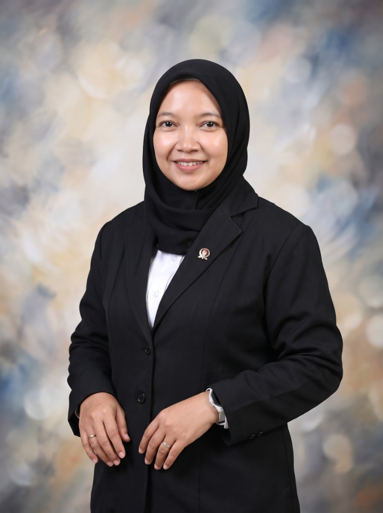
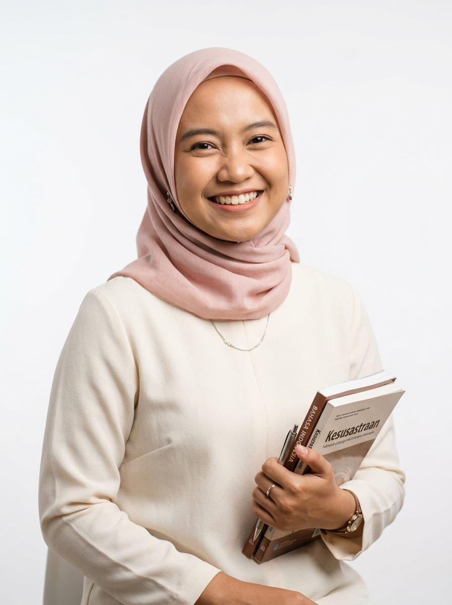
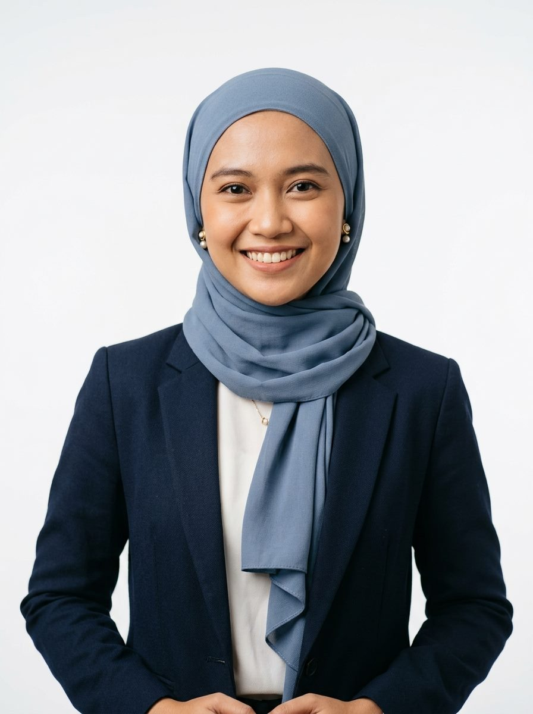
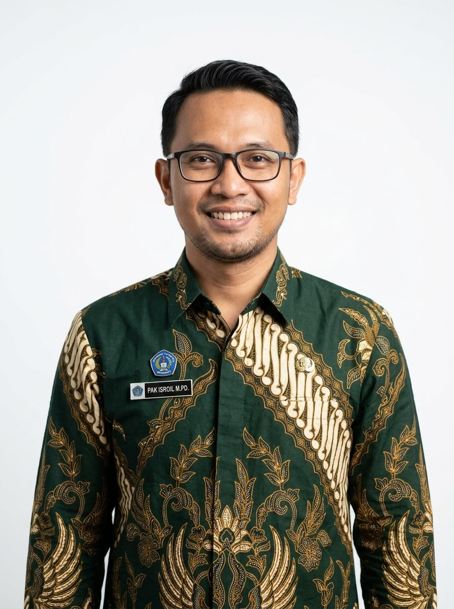

LBB Raudlatul Muta'allimin
BIMBEL PTN & KEDINASAN 2026
Lembaga Bimbingan Belajar (LBB) Raudlatul Muta'allimin hadir membuka kesempatan seluas-luasnya bagi siswa/santri dari sekolah luar (SMA, MA, SMK) maupun santri pesantren. Dilengkapi modul drilling soal eksklusif, simulasi CBT berkala, analisis rasionalisasi jurusan, dan bimbingan tentor master lulusan perguruan tinggi terbaik nasional. Bimbingan intensif persiapan SNBT, UTBK, & Kedinasan terbuka untuk siswa sekolah luar (SMA/SMK/MA) & santri. Modul drilling eksklusif, tryout CBT berkala, dan asistensi tentor master terbaik.
Membina kesiapan mental, akademik, dan strategi taktis ribuan siswa menembus PTN impian dengan bimbingan terpadu.

“LBB Raudlatul Muta'allimin membuka kesempatan seluas-luasnya bagi siswa sekolah luar dan santri internal untuk meraih bangku perguruan tinggi negeri terbaik dan sekolah kedinasan impian.”
Siswa dari sekolah luar dan wali murid dipersilakan berkonsultasi langsung mengenai analisis nilai rapor, pemetaan persaingan prodi, dan simulasi skor tes masuk PTN.
Lembaga Bimbingan Belajar (LBB) Raudlatul Muta'allimin hadir sebagai pusat pembinaan akademik terakreditasi di bawah naungan YTPAI. Dengan jadwal adaptif sepulang sekolah (pukul 13.40 WIB s.d. Ashar), program ini terbuka bagi santri internal maupun siswa dari sekolah luar (SMA/SMK/MA) untuk membina kesiapan menghadapi ujian seleksi perguruan tinggi negeri, kedinasan, dan beasiswa internasional.
Metode drilling terstruktur, pembahasan tuntas, dan asistensi kelulusan
Drilling komprehensif Tes Potensi Skolastik (TPS), Literasi Bahasa Indonesia & Inggris, serta Penalaran Matematika.
Persiapan materi Seleksi Kompetensi Dasar (TIU, TKP, TWK) untuk STAN, IPDN, STIS, Poltekip, Poltekim, dan STMKG.
Pendampingan seleksi masuk UIN, IAIN, serta ujian mandiri PTN unggulan (SIMAK UI, UTUL UGM, SMMPTN, dll.).
Kajian materi diniyah turats, penguasaan bahasa Arab komprehensif, dan simulasi tes wawancara Kemenag RI.
Simulasi berkala berbasis sistem komputer dengan analisis rasionalisasi skor terukur serta sesi klinik bedah soal privat.
Saat ini LBB Raudlatul Muta'allimin memfokuskan layanan pada Paket Sepulang Sekolah (13.40 WIB – Ashar). Didesain khusus agar ramah waktu bagi siswa sekolah luar (SMA, MA, SMK) maupun santri mukim tanpa mengganggu jam pelajaran sekolah asal.
Pertemuan terjadwal tepat setelah kepulangan sekolah reguler (kepulangan sekolah 13.20 WIB, jeda istirahat 20 menit, sesi bimbingan efektif 13.40 WIB – Ashar).
Total 30 pertemuan terstruktur penguatan materi esensial bersama tentor ahli: Bahasa Indonesia (Bu Dinda), Bahasa Inggris (Miss Muhim), dan Matematika (Pak Isroil).
Terbuka seluas-luasnya bagi siswa SMA, MA, SMK dari luar pesantren maupun santri pondok. Dilengkapi modul soal eksklusif, analisis rasionalisasi jurusan, dan konsultasi tentor.
Program intensif 30 sesi persiapan Tes Kemampuan Akademik (TKA) dipimpin Ketua LBB Novin Mayang Arum, S.Pd bersama jajaran pendidik profesional pengampu Bahasa Indonesia, Bahasa Inggris, dan Matematika (Setiap Rabu, Kamis, & Ahad pukul 13.40 WIB s.d. Ashar). Program intensif 30 sesi TKA bersama Ketua LBB Novin Mayang Arum, S.Pd & tentor Bahasa Indonesia, Inggris, dan Matematika (Rabu, Kamis, & Ahad 13.40 WIB s.d. Ashar).
Program bimbingan belajar intensif ini diselenggarakan sebanyak 30 kali pertemuan terstruktur untuk membekali santri pesantren serta siswa dari sekolah luar (SMA, MA, dan SMK). Materi bimbingan berfokus pada penguasaan konsep esensial, pembahasan latihan soal terarah, serta pendampingan langsung oleh dewan pengajar pada 3 mata pelajaran pokok: Bahasa Indonesia bersama Bu Dinda, S.Pd; Bahasa Inggris bersama Miss Muhim, S.Pd; dan Matematika bersama Pak Isroil, M.Pd. Bimbel intensif 30 sesi terstruktur untuk santri & siswa luar sekolah (SMA/MA/SMK) bersama tentor master 3 mapel pokok: Bahasa Indonesia (Bu Dinda), Bahasa Inggris (Miss Muhim), dan Matematika (Pak Isroil).

Ketua LBB 30 Sesi
Setiap Hari Rabu Rabu 10 Sesi
Setiap Hari Kamis Kamis 10 Sesi
Setiap Hari Ahad Ahad 10 Sesi| NO | HARI | TANGGAL PELAKSANAANTANGGAL | MATA PELAJARANMAPEL | TENTOR PENGAMPUTENTOR | WAKTU BELAJAR | KETERANGAN |
|---|---|---|---|---|---|---|
| 1 | Rabu | 19 Agustus 202619 Agu | Bahasa IndonesiaB. Indonesia |
Bu Dinda, S.PdBu Dinda
|
13.40 WIB – Ashar | Pertemuan 1 |
| 2 | Kamis | 20 Agustus 202620 Agu | Bahasa InggrisB. Inggris |
Miss Muhim, S.PdMiss Muhim
|
13.40 WIB – Ashar | Pertemuan 2 |
| 3 | Ahad | 23 Agustus 202623 Agu | MatematikaMatematika |
Pak Isroil, M.PdPak Isroil
|
13.40 WIB – Ashar | Pertemuan 3 |
| 4 | Rabu | 26 Agustus 202626 Agu | Bahasa IndonesiaB. Indonesia |
Bu Dinda, S.PdBu Dinda
|
13.40 WIB – Ashar | Pertemuan 4 |
| 5 | Kamis | 27 Agustus 202627 Agu | Bahasa InggrisB. Inggris |
Miss Muhim, S.PdMiss Muhim
|
13.40 WIB – Ashar | Pertemuan 5 |
| 6 | Ahad | 30 Agustus 202630 Agu | MatematikaMatematika |
Pak Isroil, M.PdPak Isroil
|
13.40 WIB – Ashar | Pertemuan 6 |
| 7 | Rabu | 2 September 20262 Sep | Bahasa IndonesiaB. Indonesia |
Bu Dinda, S.PdBu Dinda
|
13.40 WIB – Ashar | Pertemuan 7 |
| 8 | Kamis | 3 September 20263 Sep | Bahasa InggrisB. Inggris |
Miss Muhim, S.PdMiss Muhim
|
13.40 WIB – Ashar | Pertemuan 8 |
| 9 | Ahad | 6 September 20266 Sep | MatematikaMatematika |
Pak Isroil, M.PdPak Isroil
|
13.40 WIB – Ashar | Pertemuan 9 |
| 10 | Rabu | 9 September 20269 Sep | Bahasa IndonesiaB. Indonesia |
Bu Dinda, S.PdBu Dinda
|
13.40 WIB – Ashar | Pertemuan 10 |
| 11 | Kamis | 10 September 202610 Sep | Bahasa InggrisB. Inggris |
Miss Muhim, S.PdMiss Muhim
|
13.40 WIB – Ashar | Pertemuan 11 |
| 12 | Ahad | 13 September 202613 Sep | MatematikaMatematika |
Pak Isroil, M.PdPak Isroil
|
13.40 WIB – Ashar | Pertemuan 12 |
| 13 | Rabu | 16 September 202616 Sep | Bahasa IndonesiaB. Indonesia |
Bu Dinda, S.PdBu Dinda
|
13.40 WIB – Ashar | Pertemuan 13 |
| 14 | Kamis | 17 September 202617 Sep | Bahasa InggrisB. Inggris |
Miss Muhim, S.PdMiss Muhim
|
13.40 WIB – Ashar | Pertemuan 14 |
| 15 | Ahad | 20 September 202620 Sep | MatematikaMatematika |
Pak Isroil, M.PdPak Isroil
|
13.40 WIB – Ashar | Pertemuan 15 |
| 16 | Rabu | 23 September 202623 Sep | Bahasa IndonesiaB. Indonesia |
Bu Dinda, S.PdBu Dinda
|
13.40 WIB – Ashar | Pertemuan 16 |
| 17 | Kamis | 24 September 202624 Sep | Bahasa InggrisB. Inggris |
Miss Muhim, S.PdMiss Muhim
|
13.40 WIB – Ashar | Pertemuan 17 |
| 18 | Ahad | 27 September 202627 Sep | MatematikaMatematika |
Pak Isroil, M.PdPak Isroil
|
13.40 WIB – Ashar | Pertemuan 18 |
| 19 | Rabu | 30 September 202630 Sep | Bahasa IndonesiaB. Indonesia |
Bu Dinda, S.PdBu Dinda
|
13.40 WIB – Ashar | Pertemuan 19 |
| 20 | Kamis | 1 Oktober 20261 Okt | Bahasa InggrisB. Inggris |
Miss Muhim, S.PdMiss Muhim
|
13.40 WIB – Ashar | Pertemuan 20 |
| 21 | Ahad | 4 Oktober 20264 Okt | MatematikaMatematika |
Pak Isroil, M.PdPak Isroil
|
13.40 WIB – Ashar | Pertemuan 21 |
| 22 | Rabu | 7 Oktober 20267 Okt | Bahasa IndonesiaB. Indonesia |
Bu Dinda, S.PdBu Dinda
|
13.40 WIB – Ashar | Pertemuan 22 |
| 23 | Kamis | 8 Oktober 20268 Okt | Bahasa InggrisB. Inggris |
Miss Muhim, S.PdMiss Muhim
|
13.40 WIB – Ashar | Pertemuan 23 |
| 24 | Ahad | 11 Oktober 202611 Okt | MatematikaMatematika |
Pak Isroil, M.PdPak Isroil
|
13.40 WIB – Ashar | Pertemuan 24 |
| 25 | Rabu | 14 Oktober 202614 Okt | Bahasa IndonesiaB. Indonesia |
Bu Dinda, S.PdBu Dinda
|
13.40 WIB – Ashar | Pertemuan 25 |
| 26 | Kamis | 15 Oktober 202615 Okt | Bahasa InggrisB. Inggris |
Miss Muhim, S.PdMiss Muhim
|
13.40 WIB – Ashar | Pertemuan 26 |
| 27 | Ahad | 18 Oktober 202618 Okt | MatematikaMatematika |
Pak Isroil, M.PdPak Isroil
|
13.40 WIB – Ashar | Pertemuan 27 |
| 28 | Rabu | 21 Oktober 202621 Okt | Bahasa IndonesiaB. Indonesia |
Bu Dinda, S.PdBu Dinda
|
13.40 WIB – Ashar | Pertemuan 28 |
| 29 | Kamis | 22 Oktober 202622 Okt | Bahasa InggrisB. Inggris |
Miss Muhim, S.PdMiss Muhim
|
13.40 WIB – Ashar | Pertemuan 29 |
| 30 | Ahad | 25 Oktober 202625 Okt | MatematikaMatematika |
Pak Isroil, M.PdPak Isroil
|
13.40 WIB – Ashar | Pertemuan 30 |
Kami hadir untuk mendampingi prosesnya, menguatkan potensinya, dan bersama-sama mengantarkan mereka menuju cita-cita.
Assalamu’alaikum Warahmatullahi Wabarakatuh.
Setiap anak memiliki potensi untuk tumbuh dan berprestasi. Namun, potensi membutuhkan arah, proses membutuhkan pendampingan, dan sebuah cita-cita membutuhkan perjuangan yang konsisten.
Atas dasar itulah Lembaga Bimbingan Belajar hadir. Kami tidak sekadar menghadirkan tambahan pembelajaran, tetapi berupaya membangun sebuah ruang belajar yang mendorong peserta didik untuk mengenali potensi dirinya, berani menghadapi tantangan, dan memiliki kesiapan untuk melangkah menuju masa depan.
Melalui berbagai program, mulai dari persiapan masuk Perguruan Tinggi Negeri (PTN), persiapan TKA jenjang SLTP dan SLTA, hingga bimbingan Olimpiade dan pengembangan prestasi, kami berkomitmen memberikan pendampingan yang terarah, profesional, dan relevan dengan kebutuhan peserta didik.
Kami meyakini bahwa keberhasilan bukan hanya tentang mendapatkan hasil terbaik, tetapi juga tentang bagaimana seseorang belajar, berproses, membangun karakter, dan tidak berhenti berusaha ketika menghadapi kesulitan.
Karena itu, mari kita jadikan setiap proses belajar sebagai langkah menuju masa depan. Bersama guru, tentor, orang tua, dan seluruh pihak yang mendukung pendidikan, kita hadir untuk mendampingi generasi muda agar tumbuh menjadi pribadi yang berilmu, berprestasi, percaya diri, dan berakhlak mulia.
Kami hadir untuk mendampingi prosesnya, menguatkan potensinya, dan bersama-sama mengantarkan mereka menuju cita-cita.
Terima kasih atas kepercayaan yang diberikan kepada Lembaga Bimbingan Belajar.
Wassalamu’alaikum Warahmatullahi Wabarakatuh.
Pendaftaran siswa sekolah luar & santri, konsultasi minat jurusan, serta jadwal Paket Sepulang Sekolah (13.40 – Ashar):
Terbuka untuk siswa dari sekolah luar (SMA/SMK/MA/SMP/SD) & santri internal: